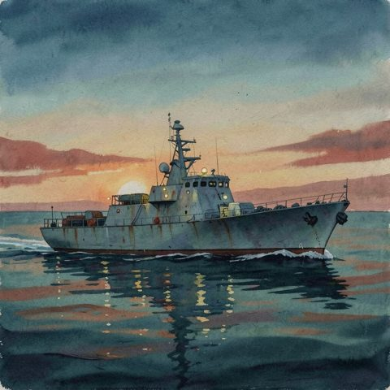

S0100:00.007.4 sPrologue

ይህ የአጎቴ ታሪክ ነው። በሺህ ዘጠኝ መቶ ሰማንያ ሁለት ዓመተ ምሕረት፣ የኢትዮጵያ ባሕር ኃይል መርከበኛ ነበር።
This is my uncle's story. In 1982 E.C. (1989/90), he was a sailor in the Ethiopian Navy.
Why this shotEstablishing shot: tells us where (the Red Sea), when (1982 E.C., the last years of the Derg) and that the sea is the second character.
- Picture
- @cf/black-forest-labs/flux-2-klein-4b · seed 9001 · refs none · 7.15 s · generated 1×
- Motion
- push in (Ken Burns)
- Voice
- gemini-3.8-flash-tts · 6.513 s · ASR similarity not checked